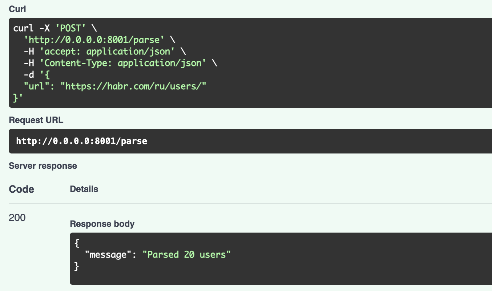
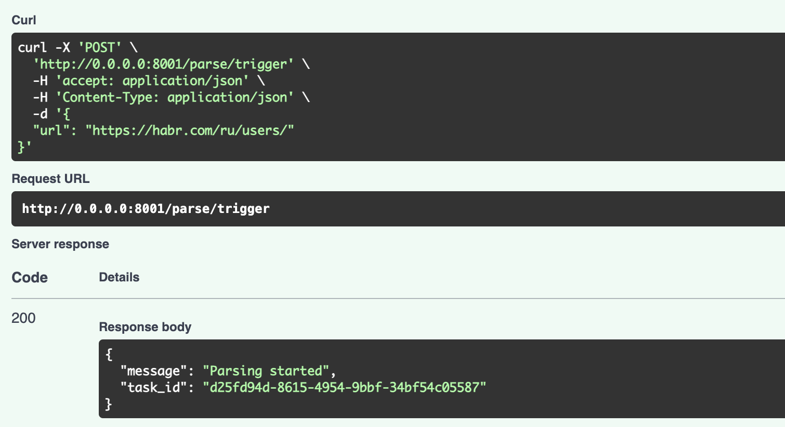
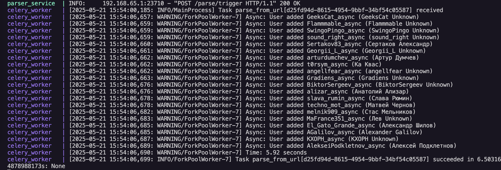
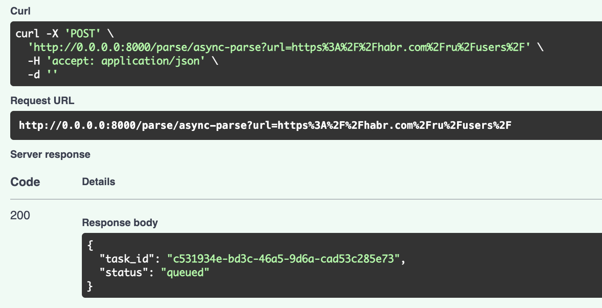
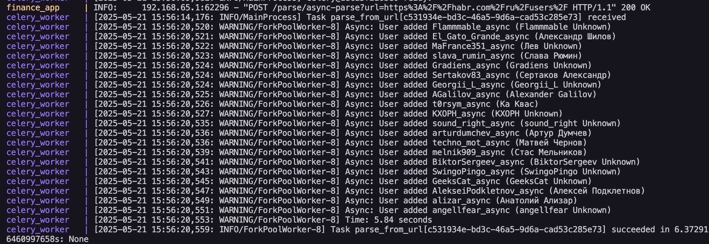

Лабораторная работа: Интеграция парсера данных с FastAPI и использование очередей Celery в Docker
Цель
Научиться упаковывать FastAPI приложения в Docker, создавать связь между основным приложением и сервисом парсинга данных, а также реализовать асинхронное выполнение задач с использованием очередей Celery и Redis.
Архитектура проекта
Проект состоит из следующих компонентов:
-
Основное FastAPI приложение (finance_app)
-
Сервис парсера (parser_service)
-
База данных PostgreSQL
-
Redis для хранения очередей задач
-
Celery для обработки асинхронных задач
Подзадача 1: Упаковка сервисов в Docker
Parser Service - Dockerfile
FROM python:3.13-slim
RUN apt-get update && apt-get install -y \
gcc build-essential libpq-dev \
&& rm -rf /var/lib/apt/lists/*
WORKDIR /app
COPY . /app
RUN pip install --no-cache-dir -r /app/req.txt
EXPOSE 8001
CMD ["uvicorn", "api:app", "--host", "0.0.0.0", "--port", "8001"]
Finance App - Dockerfile
FROM python:3.11-slim
RUN apt-get update && apt-get install -y \
gcc build-essential libpq-dev \
&& rm -rf /var/lib/apt/lists/*
WORKDIR /app
COPY . /app
RUN pip install --no-cache-dir -r /app/req.txt
EXPOSE 8000
CMD ["uvicorn", "main:app", "--host", "0.0.0.0", "--port", "8000"]
Docker Compose для оркестрации сервисов
services:
db:
image: postgres:15
container_name: finance_db
environment:
POSTGRES_DB: finance
POSTGRES_USER: postgres
POSTGRES_PASSWORD: postgres
ports:
- "5432:5432"
volumes:
- db_data:/var/lib/postgresql/data
healthcheck:
test: ["CMD", "pg_isready", "-U", "postgres"]
interval: 2s
timeout: 3s
retries: 5
finance_app:
build:
context: ./Lr1/lab1/app
container_name: finance_app
depends_on:
db:
condition: service_healthy
ports:
- "8000:8000"
environment:
DB_ADMIN: postgresql+psycopg2://postgres:postgres@db:5432/finance
restart: always
parser_service:
build:
context: ./Lr2/task2
container_name: parser_service
depends_on:
db:
condition: service_healthy
ports:
- "8001:8001"
environment:
DB_ADMIN: postgresql+asyncpg://postgres:postgres@db:5432/finance
restart: always
redis:
image: redis:7
container_name: redis
ports:
- "6379:6379"
celery_worker:
build:
context: ./Lr2/task2
container_name: celery_worker
command: celery -A celery_worker worker --loglevel=info
depends_on:
db:
condition: service_healthy
parser_service:
condition: service_started
redis:
condition: service_started
environment:
DB_ADMIN: postgresql+asyncpg://postgres:postgres@db:5432/finance
CELERY_BROKER_URL: redis://redis:6379/0
CELERY_RESULT_BACKEND: redis://redis:6379/0
restart: on-failure
volumes:
db_data:
Подзадача 2: Реализация API парсера
Parser Service - API (api.py)
from fastapi import FastAPI, HTTPException
from pydantic import BaseModel
import async_
from celery_worker import parse_from_url, celery_app
from run import extract_user_links
app = FastAPI(title="Parser Service")
class ParseRequest(BaseModel):
url: str
@app.post("/parse")
async def parse_users(request: ParseRequest):
try:
user_links = await extract_user_links(request.url)
if not user_links:
return {"message": "No user links found"}
await async_.main(user_links)
return {"message": f"Parsed {len(user_links)} users"}
except Exception as e:
raise HTTPException(status_code=500, detail=str(e))
@app.post("/parse/trigger")
async def trigger_parse(request: ParseRequest):
task = parse_from_url.delay(request.url)
return {"message": "Parsing started", "task_id": task.id}
@app.get("/parse/status/{task_id}")
async def get_task_status(task_id: str):
result = celery_app.AsyncResult(task_id)
return {
"task_id": task_id,
"status": result.status,
"result": result.result if result.ready() else None,
"successful": result.successful() if result.ready() else None
}

Подзадача 3: Настройка Celery для асинхронного выполнения задач
Celery Worker (celery_worker.py)
from celery import Celery
import asyncio
from run import extract_user_links
import async_
celery_app = Celery(
"parser",
broker="redis://redis:6379/0",
backend="redis://redis:6379/0",
)
@celery_app.task(name="parse_from_url")
def parse_from_url(url: str):
asyncio.run(run_async(url))
async def run_async(url: str):
user_urls = await extract_user_links(url)
await async_.main(user_urls)


Подзадача 4: Интеграция парсера с основным приложением
Router для вызова парсера из основного приложения
from fastapi import APIRouter, HTTPException
from celery import Celery
import httpx
from pydantic import BaseModel
import os
from dotenv import load_dotenv
router = APIRouter(prefix="/parse", tags=["Parser"])
PARSER_URL = "http://parser_service:8001/parse"
print("DEBUG PARSER_URL =", PARSER_URL)
celery_app = Celery(
"parser_celery",
broker="redis://redis:6379/0",
backend="redis://redis:6379/0",
)
class ParseRequest(BaseModel):
url: str
@router.post("/")
async def call_parser(request: ParseRequest):
url = request.url
async with httpx.AsyncClient(timeout=10) as client:
try:
response = await client.post(PARSER_URL, json={"url": url})
response.raise_for_status()
return response.json()
except httpx.RequestError as e:
print("httpx.RequestError:", repr(e))
raise HTTPException(status_code=502, detail=f"Parser service not available: {repr(e)}")
except httpx.HTTPStatusError as e:
raise HTTPException(status_code=response.status_code, detail=response.text)
@router.post("/async-parse")
def enqueue_parse_task(url: str):
task = celery_app.send_task("parse_from_url", args=[url])
return {"task_id": task.id, "status": "queued"}


Принцип работы системы
Синхронный вызов парсера:
-
Запрос приходит на эндпоинт
/parseосновного приложения -
Основное приложение перенаправляет запрос в сервис парсера
-
Парсер выполняет обработку и возвращает результат
Асинхронный вызов парсера через очередь:
-
Запрос приходит на эндпоинт
/parse/async-parseосновного приложения -
Основное приложение создает задачу в очереди Celery
-
Задача обрабатывается Celery worker'ом асинхронно
-
Клиент может проверить статус выполнения задачи по её ID
Проверка статуса задачи:
-
Запрос на эндпоинт
/parse/status/{task_id}возвращает текущий статус задачи -
При готовности результата, возвращается также и сам результат
Схема взаимодействия компонентов
- finance_app - основное приложение с бизнес-логикой
- parser_service - микросервис для парсинга данных
- redis - хранилище для очередей задач
- celery_worker - обработчик асинхронных задач
- db - база данных PostgreSQL для хранения обработанных данных
Все компоненты взаимодействуют между собой в рамках Docker-сети, что обеспечивает изоляцию и независимость сервисов.